Практика · журнал «ДентАрт» 2014 №2 (75)
Використання холодового тесту для визначення вітальності пульпи зуба в клініці
USAGE OF COLD TEST TO DETERMINE THE VITALITY OF THE TOOTH PULP IN THE CLINIC
Для визначення вітальності пульпи у практиці стоматолога використовують різні методи. Один з найдоступніших — холодовий тест. При цьому не має значення, покритий зуб штучною коронкою чи є значна за обсягом реставрація, оскільки робоча температура становить у середньому -45 градусів за Цельсієм. Для створення таких умов використовується етилхлорид, який зберігається у спеціальному балоні (фото 1).
Методика. Перед проведенням процедури необхідно попередити пацієнта про дотик холодним ватним аплікатором, на який наноситься спрей. Коли його утримують на вестибулярній або оклюзійній поверхні зуба, холод буде викликати реакцію, про яку пацієнт сигналізує лікареві, котрий паралельно рахує кількість секунд, що минули (фото 2). Рекомендується починати з визначення індивідуальної чутливості здорових вітальних зубів. Потім — симетричні і в останню чергу — зуби, які, власне, цікавлять.
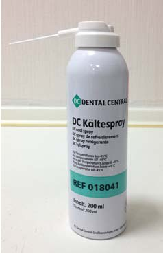
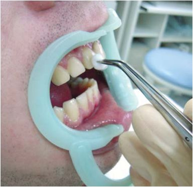
Інтерпретація результатів:
- нормальна реакція — 3-5 секунд. Допустима швидша реакція, але біль минає відразу після усунення подразника;
- некроз, повна облітерація — відсутність реакції;
- частковий некроз — пізня реакція (7-10 секунд);
- гостре (крім гнійного), хронічне запалення пульпи — швидка хвороблива реакція, яка не минає після усунення подразника.
Клінічний приклад 1
Пацієнт Б. пройшов комплексну реабілітацію з виправлення прикусу та патології скронево-нижньощелепного суглоба (фото 3). Через тиждень після фіксації коронок і накладок з діоксиду цирконію відчув нічний біль на нижній щелепі ліворуч, без можливості вказати на причинний зуб. Перкусія, пальпація в нормі. Комп'ютерна томографія в ділянці зубів 36, 38 не відповіла на поставлене питання (фото 4). Холодовий тест показав нормальну реакцію в зубах 35, 36, 37. При дотику холодним аплікатором до зуба 38 — блискавична хвороблива реакція, яка тривала понад 5 хвилин. План лікування — ендодонтичне лікування зуба 38 з наступною заміною накладки з діоксиду цирконію (фото 5).
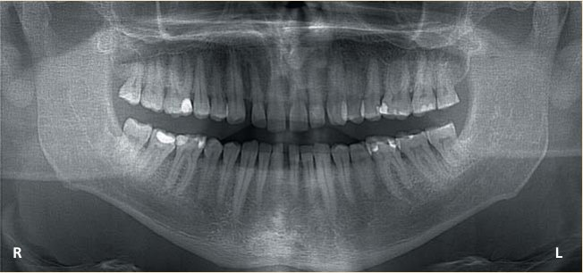
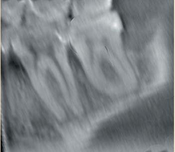
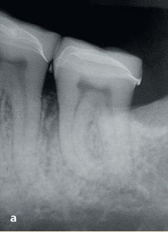
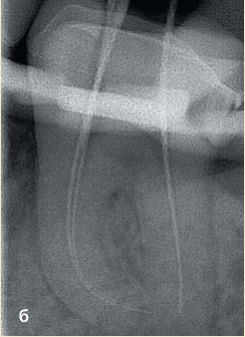
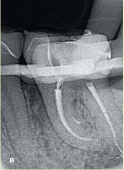
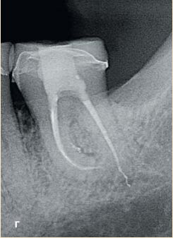
Однак існують ситуації, де цей тест не покаже адекватних значень:
- постійні зуби з несформованими верхівками — бо відсутнє субодонтобластичне нервове сплетіння Рожкова (фото 6);
- при гострому або такому, що загострився, апікальному періодонтиті зуби, що стоять поруч, можуть давати «псевдонегативний» результат. Це відбувається за рахунок зниження рН та ішемії нервових волокон, при збереженні живлення зуба. Тактика ведення — після лікування причинного зуба повторна перевірка вітальності через 7-12 днів.
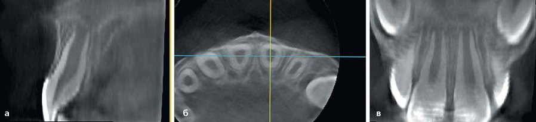
Клінічний приклад 2
Пацієнтка В. звернулася в клініку зі скаргами на біль у ділянці зуба 44. Перкусія позитивна. Рентгенологічно, крім апікальної, визначається латеральна деструкція, яка прилягає до зуба 43 (фото 7). Тест вітальності негативний в обох зубах. На комп'ютерній томографії в зубі 44 є великий латеральний канал (фото 8). План лікування — ендодонтія зуба 44 (фото 9) з наступним відновленням коронкової частини, повторна перевірка на вітальність зуба 43 через 10 днів (за відсутності реакції — ендодонтичне лікування зуба 43). Після ендодонтичного лікування результат холодової проби виявився позитивним, що підтверджує правильність тактики ведення.
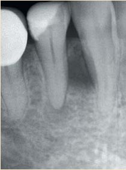
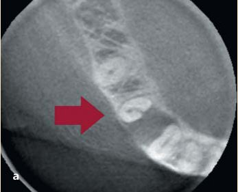
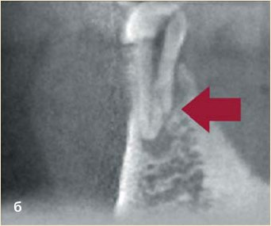
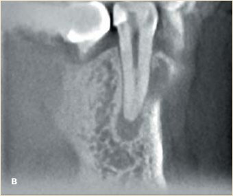
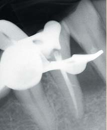
У пародонтології при проведенні лікування та профілактики приєднання додаткової інфекції (превентивна ендодонтія) для прогнозу лікування визначення вітальності зіграє ключову роль.
Клінічний приклад 3
Пацієнтка Е. проходить комплексну реабілітацію, яка включає пародонтальну хірургію, ортодонтичне лікування з подальшим протезуванням (фото 10). Фронтальна група зубів вітальна. Показань до ендодонтичного лікування немає (тільки в разі запалення або некрозу пульпи після маніпуляцій) (фото 11).
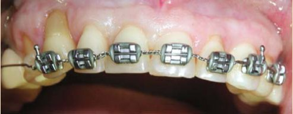
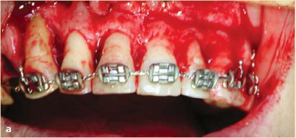
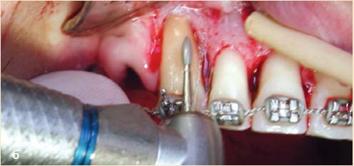
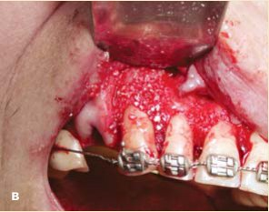
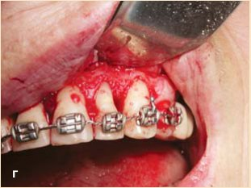
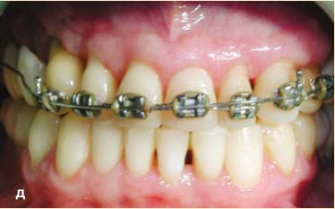
Препарування під прямі або непрямі реставрації при недотриманні адекватного охолодження, неточні тимчасові, постійні конструкції призводять до запальних явищ у пульпі з наступним некрозом. Холодова проба як один з додаткових тестів дасть точну відповідь на спірні питання.
Клінічний приклад 4
Пацієнтці М. планується естетико-функціональне відновлення. Препарування зубів під непряму конструкцію і фіксація тимчасових накладок (фото 12). Через 3 тижні перед остаточним протезуванням зазначила, що 2 тижні тому був мимовільний біль праворуч унизу, який повторився двічі. Тест вітальності показав у зубах 45 і 47 реакцію швидку, але таку, яка минає відразу після усунення холоду, і слабку пізню реакцію в зубі 46, що вказувало на некроз пульпи. План лікування — ендодонтичне лікування зуба 46 (фото 13).
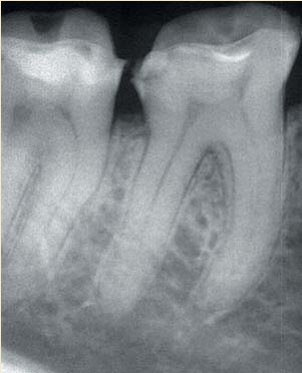
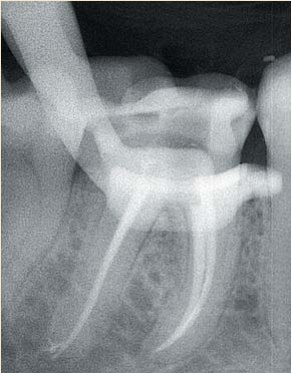
Не менш важливим буде використання температурного тесту в ортодонтичній практиці. Перед активацією дуги або інших апаратів слід перевірити вітальність зубів, які переміщуються. При надмірних силах існує ймовірність відриву судинно-нервового пучка, а при неадекватному лікуванні значна резорбція верхівки кореня з пошкодженням пульпи диктує необхідність ендодонтичного лікування.
Клінічний приклад 5
Пацієнт Ш. завершив ортодонтичне лікування. Скарг немає. Об'єктивно в зоні проекції верхівки кореня є свищевий хід (фото 14). Перкусія, пальпація — у межах норми. Тест вітальності — негативний. Інформативність конусно-променевої комп'ютерної томографії набагато вища, ніж прицільної рентгенограми (фото 15). План лікування — ендодонтичне лікування зуба 13 з подальшим відновленням коронкової частини (фото 16-17).
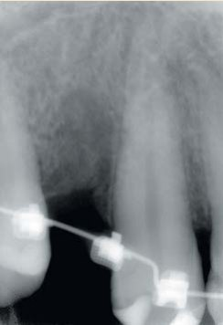
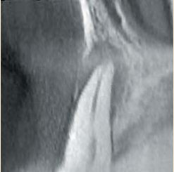
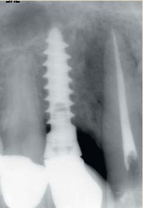
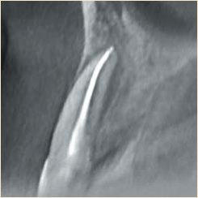
Для диференціації одонтогенно-синусної патології від риногенної холодовий тест буде показувати нормальний стан пульпи. У випадках, коли слизова оболонка гайморової пазухи вистилає корені зуба, в якому не було проведено ендодонтичного лікування і при цьому мається синусит, можливе отримання помилково-негативної реакції (фото 18). Після риногенного лікування слід повторити тест вітальності. В імплантологічній практиці після встановлення імплантатів для диференціальної діагностики з пропущеною ендодонтичною патологією холодова проба буде незамінною.
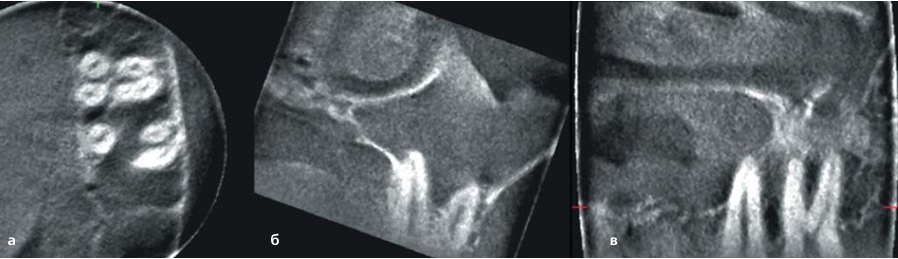
Клінічний приклад 6
Пацієнтові Л. планується проведення операції імплантації в ділянці зуба 14 (фото 19). Після встановлення імплантата на 5-ий день пацієнт повернувся зі скаргами на сильний біль на верхній щелепі праворуч. Риногенна природа виключена ЛОР-лікарем. При об'єктивному внутрішньоротовому обстеженні змін не виявлено. На комп'ютерній томографії в гайморовій пазусі є м'якотканинний компонент, який розташовується над усім дном синуса (фото 20). Холодовий тест зубів 13, 15 і 16 показує нормальні значення. План лікування — видалення імплантата.
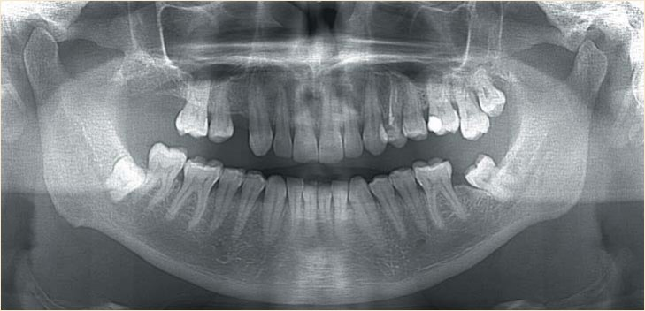
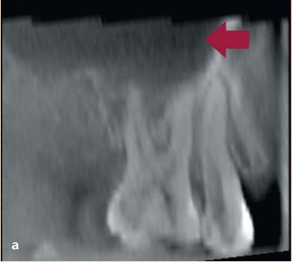
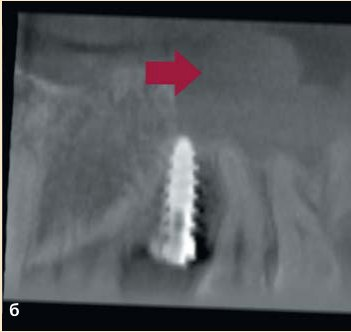
Висновок
Визначення вітальності зуба — важливий діагностичний тест у всій стоматологічній практиці. Використання найпростішого методу — холодового тесту — має високу інформативність і в більшості спірних питань підкаже правильний вибір тактики лікування патології.
Література
- Andreasen FM. Pulpal healing following acute dental trauma: clinical and radiographic review. Prac Proc Aesth Dent. 2001;13:315–322.
- Farac RV, Morgental RD, Lima RK, et al. Pulp sensibility test in elderly patients. Gerodontol. 2012;29:135–139.
- Fulling HJ, Andreasen JO. Influence of maturation status and tooth type of permanent teeth upon electrometric and thermal pulp testing. Scand J Dent Res. 1976;84:286–290.
- Fuss Z, Trowbridge H, Bender IB, et al. Assessment of reliability of electrical and thermal pulp testing agents. J Endod. 1986;12:301–305.
- Gopikrishna V, Tinagupta K, Kandaswamy D. Comparison of electrical, thermal, and pulse oximetry methods for assessing pulp vitality in recently traumatized teeth. J Endod. 2007;33:531–535.
- McCabe PS, Dummer PM. Pulp canal obliteration: an endodontic diagnosis and treatment challenge. Int Endod J. 2012;45:177–197.
- Mejare IA, Axelsson S, Davidson T, et al. Diagnosis of the condition of the dental pulp: a systematic review. Int Endod J. 2012;45:597–613.
- Myers JW. Demonstration of a possible source of error with an electric pulp tester. J Endod. 1998;24:199–200.
- Peters DD, Baumgartner JC, Lorton L. Adult pulpal diagnosis: evaluation of the positive and negative responses to cold and electrical pulp tests. J Endod. 1994;20:506–511.
- Petersson K, Soderstrom C, Kiani-Anaraki M, Levy G. Evaluation of the ability of thermal and electrical tests to register pulp vitality. Endod Dent Traumatol. 1999;15:127–131.